Robot learning · MSc dissertation
When does fine-tuning learn to use a new modality?
My MSc dissertation. I added an optical tactile sensor to SmolVLA on an ABB YuMi, compared four ways of feeding the touch signal into the model, and measured when the fine-tuned policy acted on it.
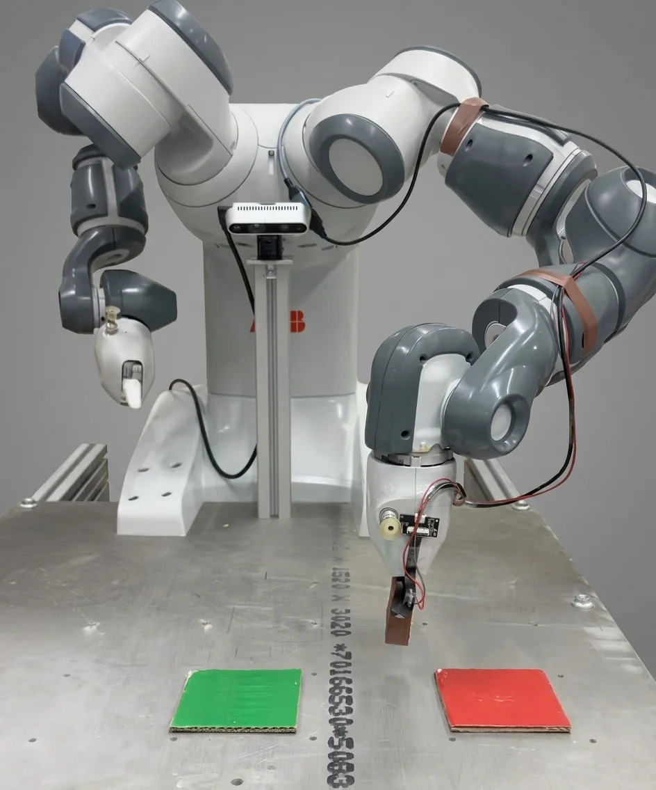
Summary
A vision-language-action (VLA) model maps camera images and a text instruction to robot actions. Friction, weight and compliance are hard to see, and two fabrics can look the same while needing different handling. Optical tactile sensors such as GelSight produce touch as an image, which suits a model built around images.
The FuSe study found that fine-tuning a pretrained policy with a plain imitation loss on data that includes a new sensor tends to leave that sensor ignored. Recent tactile VLA papers each use one way of adding touch, on different robots, tasks and data, so they cannot be compared directly. I tested four routes into the same model with the task, data and training recipe held fixed.
The main finding is that the policy uses the tactile input when it explains a large share of the demonstrated action. When touch decided the whole motion, all four routes worked under plain imitation. When touch only decided a small part of a motion that vision drove, none of them did. Adding a small auxiliary loss that predicts the material from touch made all four routes work again, and the result held on the real robot.
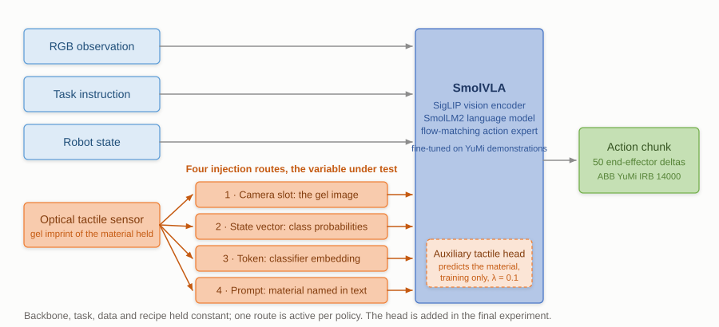
Running a VLA on the YuMi
The YuMi is not in any of the large cross-embodiment pre-training datasets, and I found no published deployment of a VLA on one. I built the pipeline from scratch. The robot is driven from Python through a RAPID motion server and the yumipy client. Demonstrations are recorded as discrete state, action and image steps with a prompt, converted to a LeRobot dataset, and used to fine-tune SmolVLA from the public smolvla_base checkpoint. Actions are 7-D end-effector deltas plus gripper state, which are close to the pre-training data and make the displacement easy to measure.
I chose SmolVLA because it fits on a single RTX 4060 Ti, where the project started. I later got access to an eight-GPU H100 node for the full-parameter runs.
The first fine-tune was cloth folding, from 250 teleoperated episodes of folding a burlap square from six start positions. The policy reproduced the descent and traverse and responded to different prompts, which proved the pipeline worked end to end. It never produced a reliable fold, whatever the episode count or recipe. The tactile comparison needed a repeatable success measure, so I switched to navigation tasks scored by end-effector travel.
I then checked what the policy could be steered by. With 80 episodes where the prompt names a direction, left and right prompts separated by 161 mm on trained phrasings and 95 mm on unseen phrasings. With the camera covered the separation was 185 mm, so this was coming from language. For vision, the prompt named a coloured square to drive to. Across two layouts the policy reached the prompted square in 10 of 18 and then 20 of 20 rollouts, and swapping the squares reversed its motion. A 510-episode dataset was used to choose the training recipe. Unfreezing the language model with the action expert reached 71%, against 54% for the action expert alone and 56% for the full model. That checkpoint was the warm start for the tactile runs.
The tactile sensor
The sensor is a low-cost copy of the GelSight Wedge: a 3D-printed shell, a translucent silicone gel with a grid of tracking dots, one white LED and a 1080p camera behind the gel. I used four materials with distinct imprints: felt, sandpaper, corduroy and a mesh.
I recorded 50 imprints per material at varied orientations across two sessions and evaluated leave-one-session-out. The first results were above 99% for every method. A classifier using only the mean RGB colour also scored 92%, which showed the housing was leaking ambient light. I sealed it with opaque foil and recollected the data. Mean RGB then fell to 39.5%. On the sealed sensor a CNN reached 92.6% (macro-F1 0.908), against 85.8% for a classical pipeline, over 8 folds of 4 materials across 2 sessions.
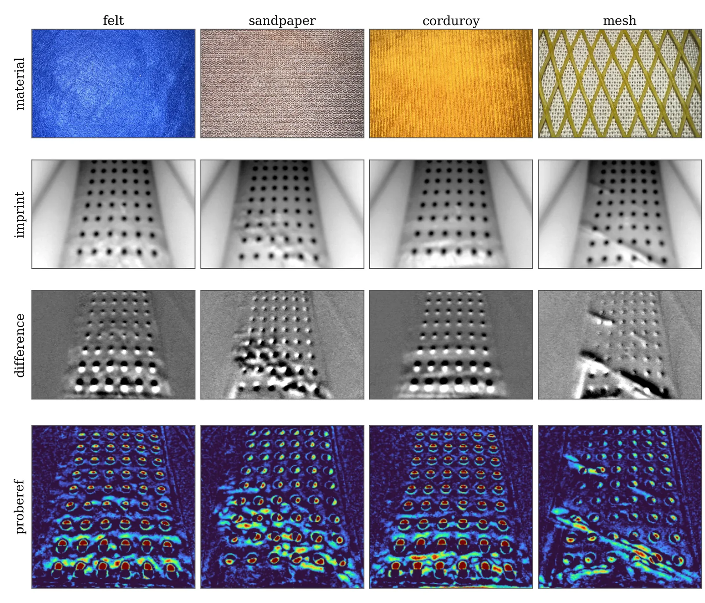
Four routes into the model
Each route uses a different input to the model. Within a task they share the same episodes, actions and recipe.
- Camera. The tactile image goes into camera slot c3 and the SigLIP encoder reads it like any other view.
- State. A four-way material vector is appended to the robot state, making it 11-dimensional.
- Token. The classifier's 512-dimensional embedding goes through a new zero-initialised projection and joins the token sequence, the same way the state vector does.
- Language. The material is written into the prompt.
Each route has two variants. The clean-signal variant injects the true material label and shows the most the route can carry. The sensor-signal variant injects what the sensor and classifier actually produce: the gel image for the camera route, the classifier's softmax for state and language, and the live embedding for the token.
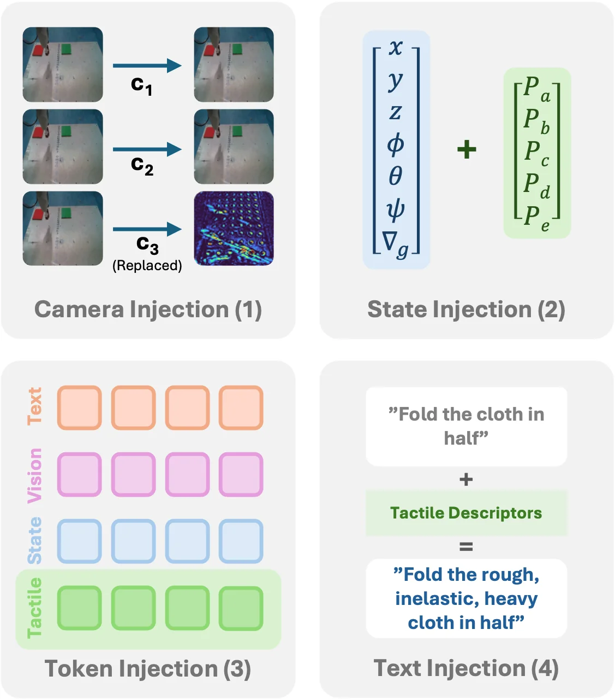
Two tasks
The tasks differ in how much of the demonstrated action depends on touch. In the direction task the material decides the whole motion: sandpaper left, felt right, corduroy forward and mesh back, from a random start. The prompt is fixed at "Given the material in the gripper, move in the correct direction". 80 episodes, 20 per material.
In the target task touch only decides which of two squares to go to. The prompt is fixed at "If holding the mesh go to the green square, otherwise go to the red square". The squares move between three layouts and swap order, so the policy has to find them by sight and the tactile input is the only cue for which one. 256 episodes, half with the mesh.
The measure is the mean separation in millimetres between end-effector stopping points. Every policy is compared with a zero-input reference (the same checkpoint with the tactile input blanked) and a control (trained with the tactile input zeroed throughout). If the tactile run separates and the reference does not, the policy is reading the tactile input. If the control also separates, there is another cue in the scene. Policies were evaluated offline on held-out episodes and then on the robot in matched pairs that differ only in the material held, using a sign-flip test at p < 0.05 and a 30 mm pass bar.
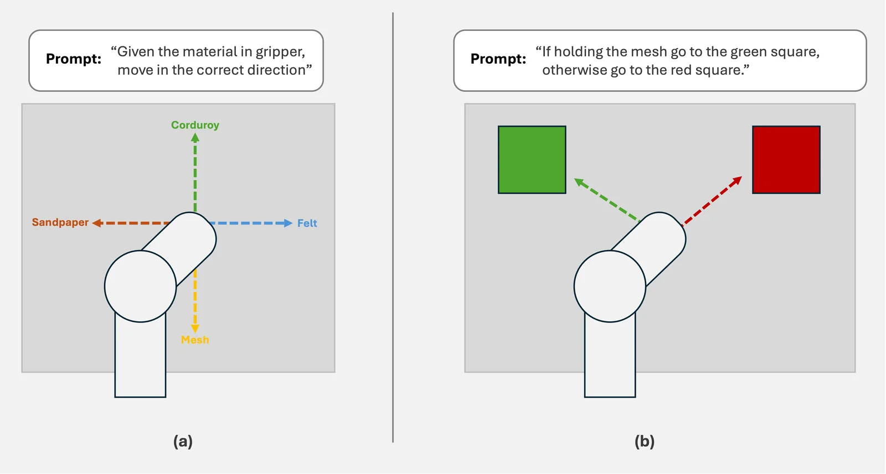
Direction task: every route works
Eight policies with three seeds each. With the clean signal the separations were 171 mm (camera), 171 mm (state), 176 mm (token) and 177 mm (language), with four-way accuracy of 99 to 100%. All 24 zero-input references fell between −5 and +9 mm.
With the sensor signal, state and language held at 172 mm and 179 mm with 100% accuracy, since they receive the classifier's prediction. The camera route with the raw gel image dropped to 85 mm at 65%, and the token route to 76 mm at 73%. All four cleared the 30 mm bar on every seed.
On the robot, the clean-signal camera policy went in the demonstrated direction in all 21 runs, with a left-against-right separation of 182 mm (171 mm offline).
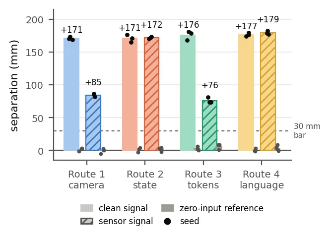
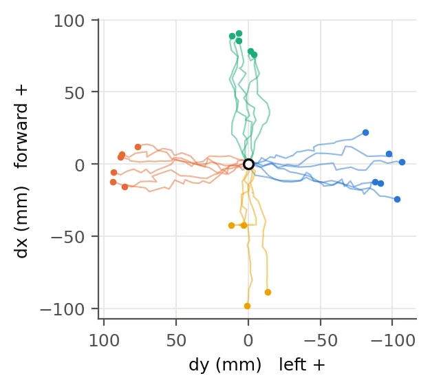
Target task: no route works under imitation alone
The same eight policies plus a control were trained on the target task from the vision-conditioned checkpoint. Every mean separation fell between −11 and +3 mm. Clean and sensor signals gave almost the same results, the references sat in the same band, and the control gave −3 mm.
The trajectories show the same forward fan whatever the gripper holds. Run live in 16 matched pairs, the sensor-signal camera policy gave −37 mm with 6 of 16 pairs in the right direction. It no longer tracked either square.
The training losses show why. Every plain-imitation run, including the control, ended at a loss of 0.060, and the clean and sensor variants of a route matched to four decimal places on the same seed. Touch decides only which square, a small share of the action, so a policy that ignores it loses almost nothing on the imitation loss.
Adding an auxiliary tactile head
Changing the prompt and the recipe did not help, so I changed the training objective. A single linear layer with a sigmoid reads the action expert's features and predicts whether the gripper holds the mesh. Its binary cross-entropy is added to the imitation loss with a weight of 0.1, and the head is removed at inference. This gives the tactile input its own training gradient.
With the same data, recipe, warm start and measures, every route now worked. With the clean signal the separations were +142 mm (camera), +143 mm (state), +118 mm (token) and +151 mm (language). With the sensor signal they were +95, +148, +131 and +144 mm. The references fell to between −16 and +18 mm and the control gave +9 mm, so the head on its own does not produce the separation.
The final loss went from 0.060 to 0.059 for the camera, state and language routes on every seed. That is roughly the 2% share of the action that touch resolves, and it was enough for the policy to use touch on every route.
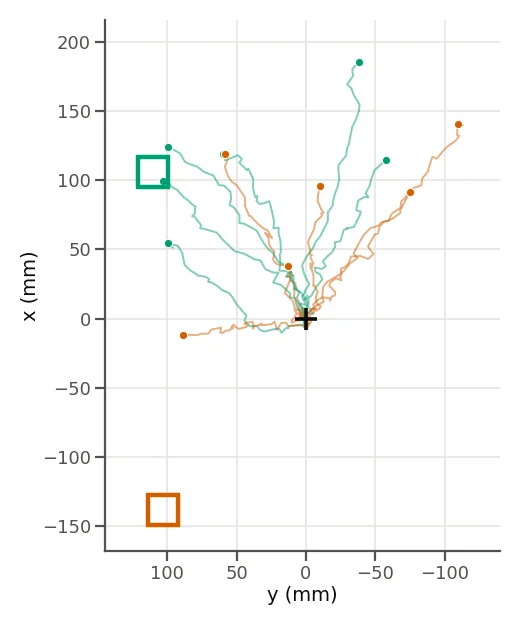
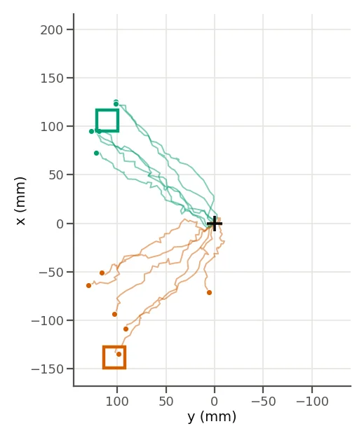
I ran the sensor-signal camera policy with the head on the robot in 24 matched pairs over three blocks, moving and swapping the squares between blocks. All 24 pairs separated in the correct direction, with a mean of +155 mm (+149 mm offline). Mesh runs reached the green square in 24 of 24 trials and empty-gripper runs reached the red in 18 of 24. Five of the six misses were in the third block, where I think a ripple in the gel from repeated clamping was being read as mesh.
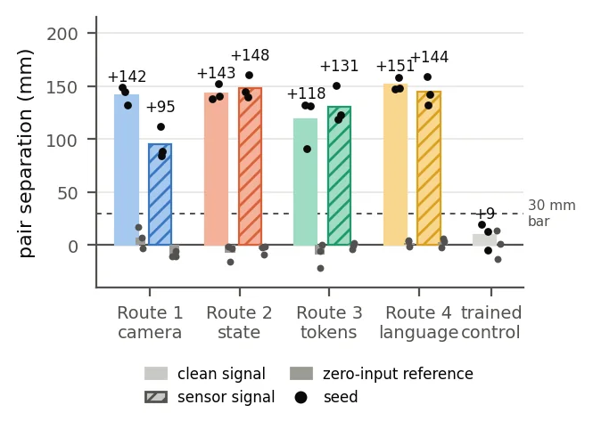
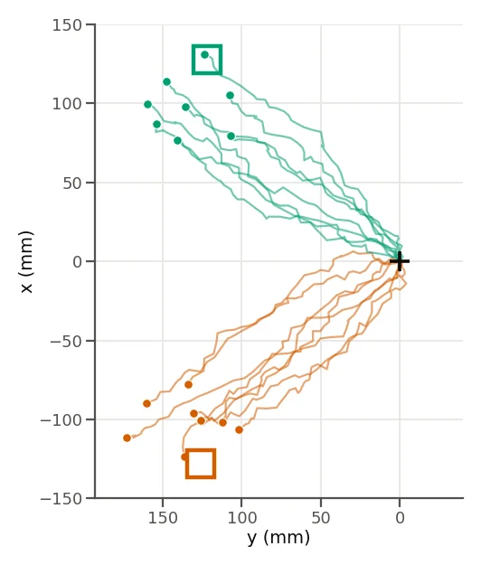
Discussion
Whether a fine-tuned VLA uses a new input depends on how much of the demonstrated action that input explains. When touch decided the whole motion, every route worked under plain imitation. When it decided a small part of a motion that vision and language mostly determined, no route worked. This reproduces the FuSe result on a different model and robot, and shows it depends on the task.
The auxiliary head makes the material a training target, so the tactile input gets a gradient of its own. The control shows the head alone does not cause the separation, and zeroing the tactile input at test time removes it on every route.
With the clean signal all four routes performed about the same. With the sensor signal they are not directly comparable, because each route receives a different form of the data: the classifier's prediction for state and language, its embedding for the token, and the raw gel image for the camera.
Limitations and next steps
- The head predicts a material class, so it only helps when the useful tactile information is which material is held. Continuous signals such as shear, slip or contact area would need a regression head and a different loss.
- The 3D-printed gripper deformed under repeated clamping and needed recalibrating between sessions. A stiffer mount and an opaque housing from the start are the first hardware changes.
- With the head in place, the next task is a fold where touch confirms the grasp before each lift.
- Every fine-tune was on a robot the model had never seen, so it had to learn the YuMi and the tactile input at the same time. Putting the sensor on an arm in SmolVLA's pre-training data, such as the SO-101, would separate the two.